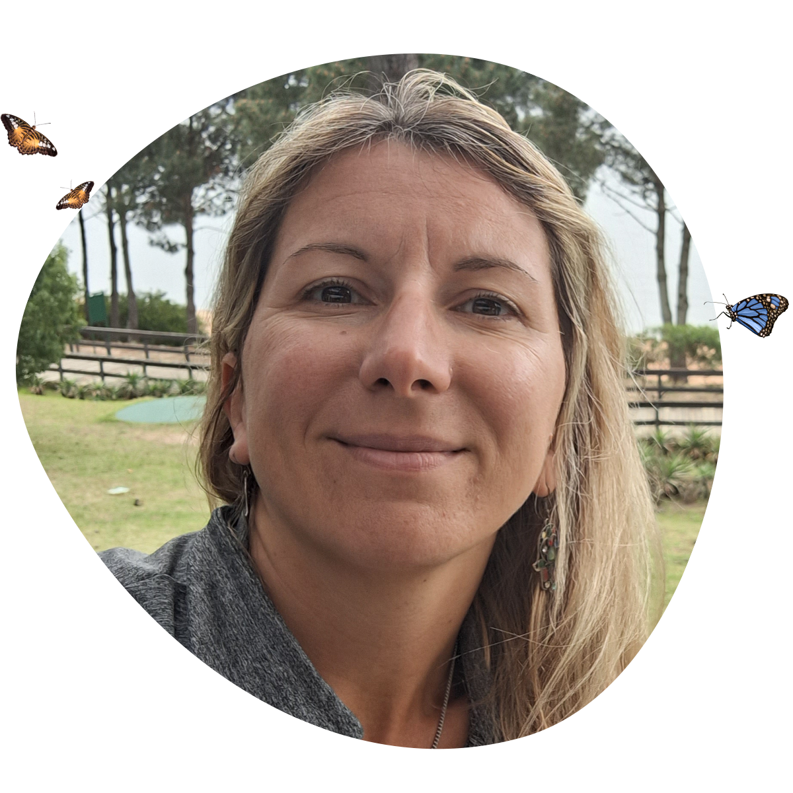

Te acompaño a descubrir tu propósito a través del mensaje de tu síntoma.
Consultora en Bioexistencia Consciente.
Consultora especializada en Empresas y Economía.
Certificada por: 

Consultora en Bioexistencia Consciente.
Consultora especializada en Empresas y Economía.
Certificada por:
Si tenés un síntoma económico, no ganas lo suficiente, tu empresa no “remonta”, tenes problemas con tus socios, no podes salir de las deudas, no lográs comprar tu casa… Te invito a transitarlo desde una mirada diferente a través de un
“Ciclo de Consultas de Bioexistencia Aplicada a Empresas y Economía.”
Podrás “Recordar, Revivir y Reparar” las historias dolorosas no sanadas de tu clan que sostienen tu síntoma económico; para SANAR y lograr llevar una vida en paz, armonía, equilibrio, consciencia y coherencia.
Agendar turno
Si llegaste hasta aquí debido a que estás transitando un SÍNTOMA, una dificultad, una historia de vida no deseada; te propongo que escuches el MENSAJE que ese SÍNTOMA viene a traerte y que compruebes, como lo han hecho ya miles de seres, que un síntoma nunca puede equivocarse, que viene desde tu inconsciente y tu Ser más profundo, que porta mensajes ancestrales, y que viene a invitarte a DESPERTAR. Si te animás a dar tu paso, hacer tu MOVIMIENTO, tomar el mando, y asumirse el CREADOR de toda tu existencia, será un honor acompañarte.
Asesoramiento en temas de empresas y economía para individuos y organizaciones de cualquier tamaño.
*Las consultas son mensuales y en línea.
Consultora en Bioexistencia aplicada a Empresas y Economía – Certificada por Humano Puente. Ante todo una eterna caminante de mi misma. Alguien que, gracias a escuchar sus dolencias, el mensaje de sus síntomas, fue sanando partecitas de su SER para empezar a DESPERTAR. Y ese Despertar me llevó a encontrar mi PROPÓSITO en la tierra, que es acompañarte a DESCUBRIR EL TUYO, siguiendo el mensaje de tu SÍNTOMA.
Luego de egresar de dos carreras universitarias y de pasar 20 años trabajando en RRHH en empresas; repitiendo patrones sólo me llevaron al sufrimiento y la desvalorización; llegué a Humano Puente y descubrí que el único camino para sanar, es el PROPIO. Y siempre es HACIA ADENTRO.
Ser CAMINANTE DE SÍ MISMO conlleva un gran compromiso, una gran valentía, y una gran responsabilidad, la de TOMAR LAS RIENDAS DE TU VIDA.
Por eso ¡sanar es para valientes! Porque ya no hay nadie afuera que te sane o te perjudique cuando pasas del “YO ESTOY SOLO” al “SOLO ESTOY YO”.
¿Te animás? Sería un honor acompañarte.

Un programa de Alto Valor donde vas a descubrir que TODO LO QUE TE PE$A , TE ENGORDA, y aprender a Desprogramarlo.
Te invito a explorar el SOBREPE$O desde la decodificación, abordando todos los anclajes según la parte del cuerpo donde se aloja, la diferencia entre grasa dura y grasa blanda, la importancia del “Número guía”, la relación con los no nacidos, los abusos, el “conflicto de silueta” los síntomas económicos y mucho más. Vamos a ver los árboles genealógicos de cada participante para comprender qué historias sostienen el síntoma.
Te invito a descubrir ¿Para qué PASADO, tus kilos de más son HOY la mejor SOLUCIÓN?
Una Masterclass de Alto Impacto donde vas a descubrir los patrones y anclajes inconscientes que están impidiendo que tu Proyecto salga a la luz, crezca, brille y dé frutos.
Animate a transitar el recorrido por tu "Primer Proyecto", para descubrir las trabas que hoy no te permiten "Nacer".
También vas a lograr tomar consciencia de creencias, fidelidades familiares y patrones que operan para que tu Proyecto o Emprendimiento se trabe y te cueste mostrarte, tener dinero, crecer y brillar.
Animate a mirar hacia adentro para empezar a florecer hacia afuera.
Desde la Bioexistencia aplicada a Empresas y Economía te acompaño a transitar el abordaje de todas las temáticas relacionadas con EMPRESAS Y/O ECONOMÍA de todo tipo. Ya sea un individuo con dificultades en su economía personal, empleado, emprendedor, empresario, líder de equipos de trabajo, CEO, fundador o socio de una empresa.
La Bioexistencia aplicada a Empresas y Economía (BEX EyE) se basa en la aplicación del algoritmo “Albian”, un método específico creado por Pablo Almazán y Lucrecia Bianchi, creadores de Humano Puente, un Camino de Consciencia cuyo propósito no es solamente sanar la economía de tu empresa o tu síntoma; sino que cambie tu vida completa, y, como consecuencia, sane tu empresa. Que logres ser abundante en coherencia en todos los ámbitos de tu vida. En tus relaciones, en tu tiempo, en tu salud, en tu contacto con la naturaleza, y también en dinero.
Las consultas se realizan una vez al mes, tienen una duración aproximada de 2 hs, online, con un link de acceso que será único y confidencial para cada consultante.
Un ciclo de consultas consta de entre 15 y 20 consultas aproximadamente. Es probable que personal de Humano Puente se ponga en contacto contigo durante, o luego de haber sido atendido en un ciclo de consultas, para analizar los avances de tu caso, cambios experimentados en tu vida y tu empresa y, corroborar que hayas sido atendido dentro de las pautas que propone la BEX EyE.
Mi propósito es acompañarte a que puedas reencontrarte con la paz, la plenitud, la felicidad en todos los ámbitos de tu vida.
¿Te animás?
Descubramos juntos el tesoro tras el síntoma.